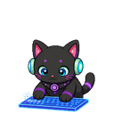
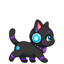
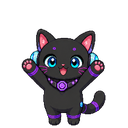
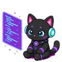
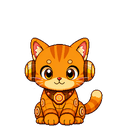
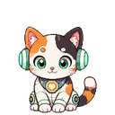

타이핑 반응
전역 키 입력 발생만 감지해 고양이가 타이핑 애니메이션으로 반응합니다.

AI Agent와 대화하는 오픈소스 데스크탑 픽셀 고양이
화면 하단을 사뿐히 걸어다니며 타이핑, 코딩 에이전트 상태, 짧은 질문에 반응합니다. OpenAI/Codex, Claude, Gemini 로그인과 Ollama 같은 로컬 모델을 우선 지원합니다.

openNeko는 데스크탑 위에 가볍게 머무는 반응형 펫입니다. 채팅, 상태 표시, 스킬 실행, 스킨 교체가 모두 로컬 앱 안에서 동작합니다.
전역 키 입력 발생만 감지해 고양이가 타이핑 애니메이션으로 반응합니다.

고양이를 클릭하면 작은 말풍선 입력창이 열리고, 선택한 Agent의 답변이 고양이 말투로 돌아옵니다.

HTTP 상태 이벤트와 Cursor, Claude Code CLI, Codex CLI/App, Antigravity, Gemini, Kiro 같은 에이전트 활동을 감지합니다.

번들 또는 사용자 SKILL.md를 메뉴와 슬래시 명령으로 실행합니다.
기본 스킨 5종과 외부 스킨 폴더를 지원해 픽셀 고양이를 바꿀 수 있습니다.

같은 LAN의 openNeko 인스턴스를 발견해 친구 고양이가 화면에 찾아옵니다.

GitHub Pages는 소개 페이지를 맡고, 실제 앱 소스와 설치 스크립트는 GitHub 저장소에서 관리합니다.
curl -fsSL https://raw.githubusercontent.com/kimtoma/openNeko/refs/heads/main/scripts/install.sh | bash
기본은 OAuth 로그인 기반 Agent입니다. 필요하면 API 키 provider나 로컬 OpenAI 호환 엔드포인트를 설정에서 추가합니다.